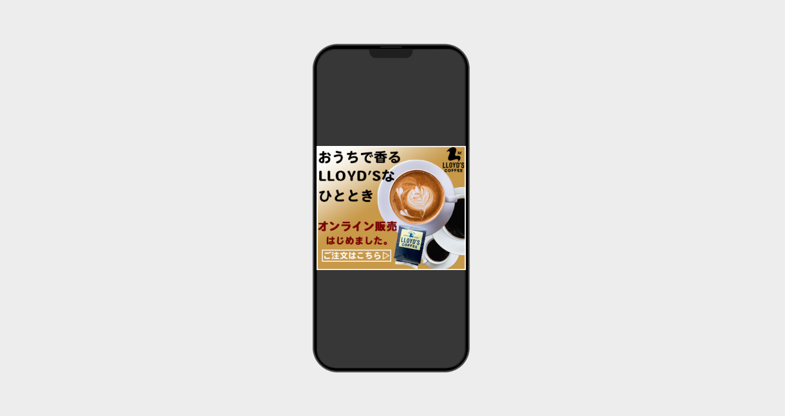
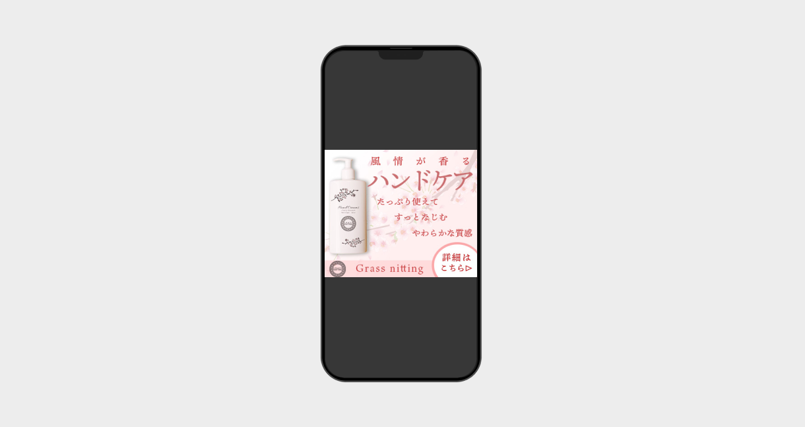

バナー作品
DETAIL
PROJECT
LLOYD'S COFFEE
オンライン販売バナー
バナー
2024年5月(訓練開始2ヶ月目)

ターゲット
遠方にお住いのお客様、自宅で本格コーヒーを堪能したいとお考えのお客様。
制作目的
遠方にお住まいで中々ご来店が難しい方にも自宅でコーヒーを楽しんでいただき、ご注文をいただくことで売り上げを伸ばすため。また、オンライン販売で豆を買ってくれたお客様の店舗へのご来店を狙い、新規の顧客を生み出すため。
コンセプト
おうち時間×コーヒー
作品概要
北海道小樽市のカフェ「LLOYD’S COFFEE」のオンライン販売を告知するバナーを作成しました。コロナウイルスをはじめとする感染症の流行に伴い、自宅での癒しやリラックスにコーヒーはうってつけと思い、おうち時間×コーヒーというコンセプトとしました。
デザイン
バナーの見た目からもミルクたっぷりのコーヒーをイメージを感じていただきたく、ホワイトからブラウンへのグラデーションで表現をしています。また、人間の目線はZの書き順に沿って動くということから、情報が左上から始まるように配置をしています。
制作時間
デザイン:3時間
使用ツール
Adobe PhotoShop
PROJECT
春季限定ハンドクリームのバナー(架空)
バナー
2024年5月(訓練開始2ヶ月目)

ターゲット
手の乾燥にお悩みの20～40代の女性。
制作目的
桜の花びらを彷彿をさせるリラックス効果のある香りと、肌に馴染む質感で癒やしのひととき感じていただけるハンドクリームの購入を促進し、売上を上げるため。
コンセプト
春を感じるハンドクリーム
作品概要
春をテーマとしたハンドクリームの販売促進バナーを制作いたしました。北海道の春はまだ肌寒い日が多く、乾燥に悩む女性が多いと聞きます。リラックス効果のある香り、手に馴染む質感、大容量の三本柱をバナーに込めて作成しました。
デザイン
淡いピンクの配色と、背景の桜から春をテーマにした商品であることを演出しました。また、小さいバナーからでもこれが何でどんなものなのか想像していただけるように短い言葉を組み合わせて作成しました。
制作時間
デザイン:3時間
使用ツール
Adobe PhotoShop